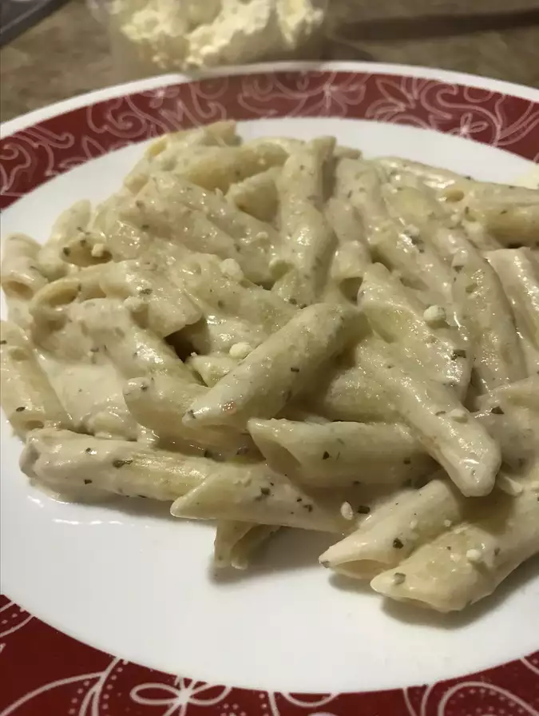

Fettuccini Alfredo

Description
A low-fat pasta for garlic lovers. For variety, try shell or penne pasta.
Ingredients:
- 12 ounces dry fettuccine pasta
- 1 cup nonfat milk
- ½ cup reduced fat margarine
- 8 ounces Neufchatel cheese, cubed
- ¼ teaspoon garlic powder
- ½ teaspoon minced garlic
- ¼ teaspoon onion salt
- 1 cup grated Parmesan cheese
Steps:
- In a large pot of boiling salted water cook fettuccini until al dente. Drain.
- Combine milk, cubed Neufchatel cheese, butter or margarine, garlic powder, onion powder, minced garlic, and salt. Stir until smooth. Stir in grated Parmesan cheese and cook 2 to 3 minutes, or until blended.
- Toss pasta with Alfredo sauce and serve warm.